本記事は、マイクロソフト社員によって公開されております。
いつも弊社製品をご利用いただきまして誠にありがとうございます。日本マイクロソフトの Windows サポートチームの平塚です。
本記事では Azure 環境におけるフェールオーバー クラスター (以下、WSFC) の構築ポイントや展開手順例についてご紹介します。
<目次>
1. 仮想 IP アドレスを使用するアプリケーションと Azure ロードバランサーの設置について
2. 管理用のクラスターへのロードバランサーの必要性について
3. ハートビート通信の閾値について
4. Azure 環境での WSFC の構築例
1. 仮想 IP アドレスを使用するアプリケーションと Azure ロードバランサーの設置について
Azure の VM では Azure 仮想ネットワークから割り当てられた IP アドレスのみを使用できます。WSFC の仮想 IP アドレス等、Azure VM の OS 内で設定した IP アドレスは Azure 仮想ネットワークで正しく機能せず通信ができません。
そのため、WSFC により高可用性化したアプリケーションで仮想 IP アドレスを使用する場合は Azure ロードバランサーを展開し、かつ、ロードバランサーのフロントエンド IP を WSFC のアプリケーションで使用する仮想 IP アドレスと同一に設定する必要があります。
なお、WSFC の仮想 IP アドレスはクラスターを構成するいずれかのノード1 台のみが保持する実装となっています。ロードバランサーのトラフィック送信先 (バックエンドプール) には、クラスターを構成する VM それぞれの NIC または IP アドレスを指定しますが、この設定のみでは仮想 IP アドレスを保持していないVM にもトラフィックが振り分けられてしまいます。
WSFC の仮想 IP アドレスの設定には、任意のポート番号を LISTEN する ProbePort パラメーターが用意されており、ロードバランサーの正常性プローブと組み合わせて設定することで、仮想 IP アドレスの所有者ノード (VM)、つまり、高可用性化したアプリケーションが稼働している VM にのみにトラフィックを送信することが可能です。
また、ロードバランサーからの送信トラフィックの宛先 IP アドレスをフロントエンド IP (仮想 IP アドレス) にするため、ロードバランサーの送信負荷分散規則の設定でフローティング IP を有効化します。バックエンドのアプリケーションが仮想 IP アドレスを使用せず VM の IP アドレスを使用するような場合は、フローティング IP を有効化する必要はありません。例えば、スケールアウト ファイル サーバー(SOFS) にロードバランサー経由で通信するような要件がある場合が該当します。
(参考情報)
Azure Load Balancer のフローティング IP の構成| Microsoft Learn
以下、参考アーキテクチャ図です。
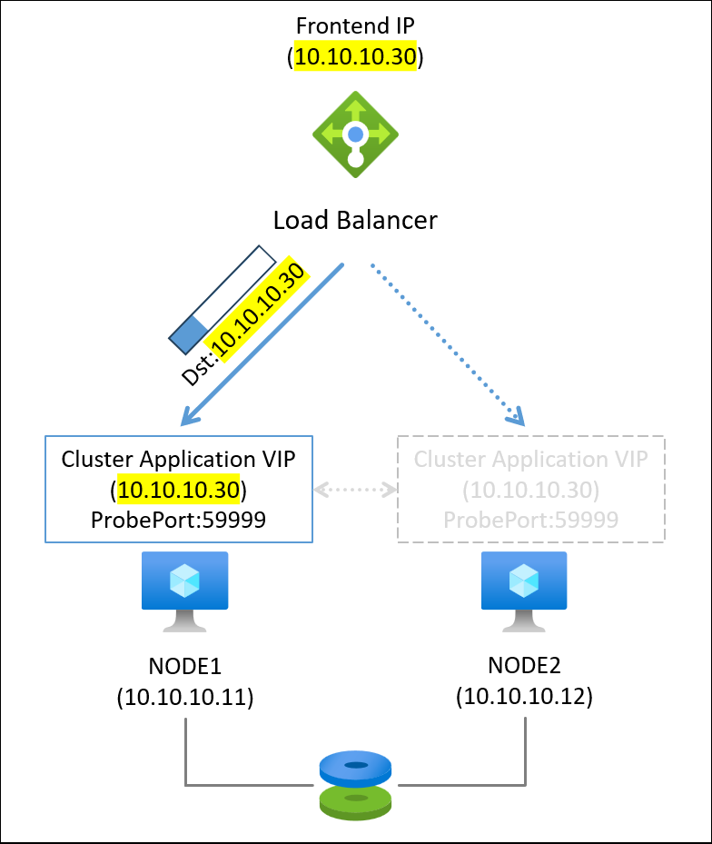
2. 管理用のクラスターへのロードバランサーの必要性について
Windows Server 2019 以降の OS バージョンでは、クラスター展開時に Azure 上の VM かどうかを検出する機能が実装されており、Azure 上に適した構成や設定が自動的に適用されます。
(参考情報)
Failover Clustering in Azure - Microsoft Community Hub
Azure 上に展開した Windows Server 2019 以降の OS でフェールオーバークラスターマネージャーによりクラスターを作成した場合、DNN (Distributed Network Name: 分散サーバー名) と呼ばれる仮想クラスター名のリソースが作成され、管理用のクラスターのリソース (コアリソース) に仮想 IP アドレスリソースは存在しません。
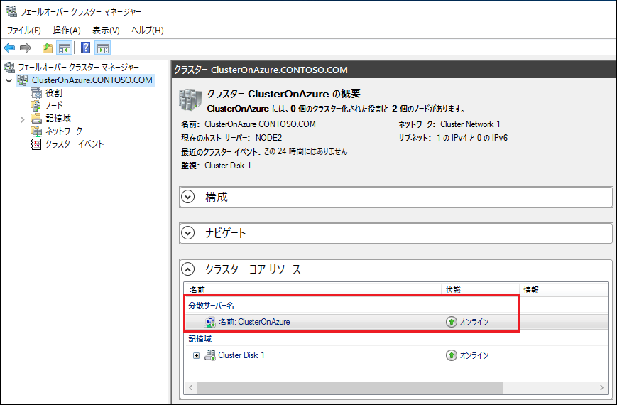
DNN ではクラスターノード (VM) の IP アドレスに名前解決されるように DNS サーバーにレコードが登録されるため、管理用のクラスターへの接続のために Azure ロードバランサーを構成する必要はありません。なお、DNN を使ったアクセスは DNS ラウンドロビンで行われます。
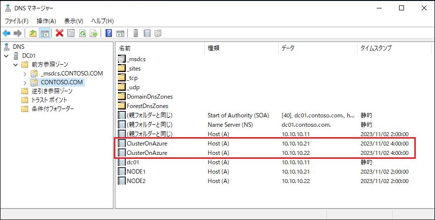
Windows Server 2016 以前の OS で Azure 上にクラスターを展開する場合、従来どおり管理用のクラスターのリソース (コアリソース) に仮想 IP アドレスが作成されます。
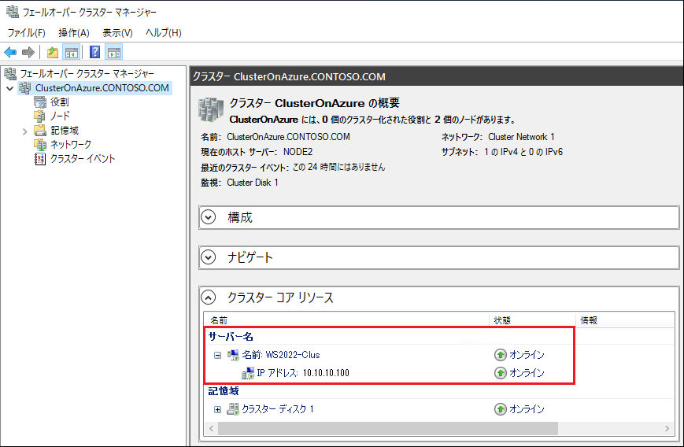
仮想ネットワーク名や仮想 IP アドレスを使って管理用のクラスターに接続する必要がある場合はロードバランサーが必要となりますが、管理用のクラスターへの接続がアプリケーションで必要となることは通常ありません。
フェールオーバークラスターマネージャーに接続する場合は、クラスターを構成するノード (VM) にRDP 接続し、クラスターへ接続する際のクラスター名として 「このサーバー上のクラスター (Cluster on this server…)」 を選択します。
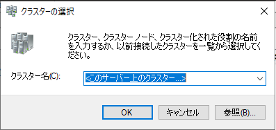
したがって、Windows Server 2016 以前の OS でクラスターを作成した場合でも、アプリケーション側で特別な要件がない限り、管理用のクラスターの接続のためのロードバランサーの展開は不要となります。
なお、Windows Server 2019 以降の New-Cluster コマンドレットには -ManagementPointNetworkType オプションが実装されており、クラスター作成時に管理用のクラスター名を DNN にするか (Distributed)、従来のネットワーク名と仮想 IP アドレスの組み合わせにするか (Singleton)、選択することができます。
(参考情報)
New-Cluster (FailoverClusters) | Microsoft Learn
Failover Clustering in Azure - Microsoft Community Hub
3. ハートビート通信の閾値について
WSFC では、クラスターを構成するノード間の正常性確認処理であるハートビート通信という機能が備わっており、ハートビート通信が一定時間できない場合、相手ノードがダウンしていると判断され、停止したノードがアプリケーションのオーナーノードであった場合には、そのアプリケーションは他のノードへフェールオーバーされます。
Azure 環境では、計画的なメンテナンス時に 30 秒 ほど仮想マシンが一時停止する場合があり、ハートビート通信失敗までの閾値は既定で 30 秒未満であることから、メンテナンスの度に上記の事象が発生してしまうため、環境に合わせてこれらの閾値を延長いただくことを推奨しています。
Windows Server 2019 以降の OS では、前述のとおり Azure 環境であることを自動で検知する機能が追加されたことから、これらの閾値も自動で調整 (30 秒) される機能が備わっていますが、Window Server 2016 以前の OS をお使いの場合は、別途閾値の調整も併せてご検討ください。
(参考情報)
Failover Clustering in Azure - Microsoft Community Hub
なお、具体的な設定値につきましては、クラスター上のアプリケーションの停止時間がどの程度まで許容できるかによって異なります。詳細や設定の変更方法につきましては、以下の公開情報でも詳細をおまとめしておりますので、ご確認をいただけますと幸いです。
(参考情報)
Azure 上でフェールオーバー クラスターを構築する際の留意事項について| Microsoft Learn
4. Azure 環境での WSFC の構築例
Azure 上に WSFC で高可用性化したファイルサーバーの役割を展開する例についてご紹介します。
今回例として、次のような構成で展開を進めます。
| OS | Windows Server 2022 |
| ノード | 2ノード（Node1: 10.10.10.21 / Node2: 10.10.10.22） |
| ファイルサーバーの役割の仮想 IP アドレス | 10.10.10.30 |
| クラスター共有ディスク | Azure 共有ディスク |
<展開の流れ>
(1) クラスター、ファイルサーバーの役割の作成
(2) Health プローブを待ち受けるポートの作成
(3) Azure ロードバランサーの作成
(1) クラスター、ファイルサーバーの役割の作成
次の公開情報を参考に、管理用のクラスターおよびファイルサーバーの役割を構成します。 ※展開の詳細は割愛させていただきます
(参考情報)
フェールオーバー クラスターを作成する| Microsoft Learn
クラスター化された2 ノード ファイル サーバーの展開| Microsoft Learn
以下、クラスターならびにファイルサーバーの役割構成後のフェールオーバークラスターマネージャー上の表示例です。
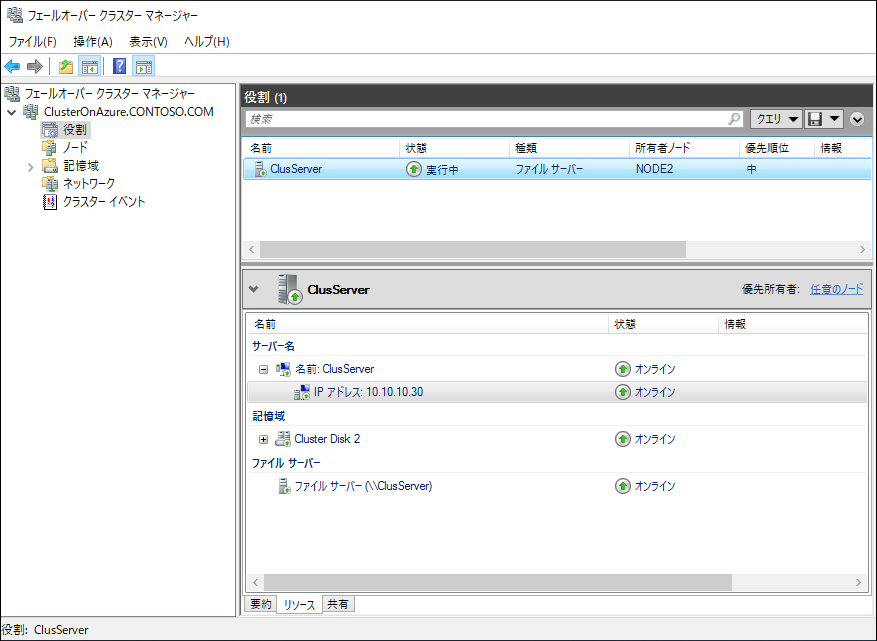
(2) Health プローブを待ち受けるポートの作成
WSFC で作成した高可用性化ファイルサーバーの IP アドレスリソースに、Azure ロードバランサーからの Health プローブを待ち受けるポートを作成します。ロードバランサーは Health プローブから応答がある VM にのみトラフィックを送信するため、この設定によりファイルサーバーの所有者ノードにのみクライアントからの通信が振り分けられます。
任意のクラスターノードに RDP 接続し、管理者として Powershell を起動します。
次のコマンドを実行して、高可用性化ファイルサーバーの役割の IP アドレスリソース名を確認します。
1 | Get-ClusterResource |
以下の例の場合、「IP Address 10.10.10.30」 が対象の IP アドレスリソース名です。
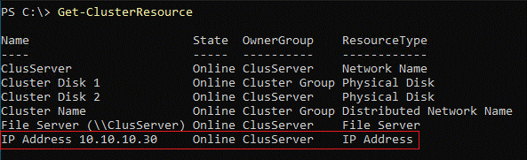
- 次のコマンドを実行して、現在の ProbePort パラメーターの値が 0 であることを確認します。
1 | $IPResourceName = "<ファイルサーバーの IP アドレス リソース名>" |
以下、コマンド実行例です。
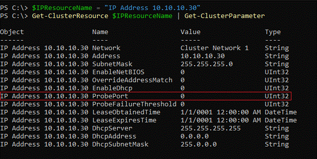
- 次のコマンドを実行し、ファイルサーバーの仮想 IP アドレスが属するクラスターネットワーク名を確認します。
1 | Get-ClusterNetwork | ft Name,State,Address,AddressMask,Role |
以下の例の場合、「Cluster Network 1」 が対象のクラスターネットワーク名です (クラスターネットワークは構成により複数存在します)。
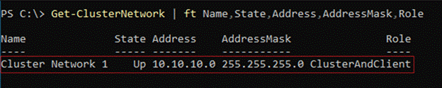
- 次のコマンドを実行して、クラスターコアリソースのネットワーク名に Probe 設定を行います。Probe ポート番号は、クラスターノード上で利用されていない任意のポート番号を指定します。
1 | $ClusterNetworkName = "<ファイルサーバーの仮想 IP アドレスが属するクラスターネットワーク名>" |
以下、コマンド実行結果例です。
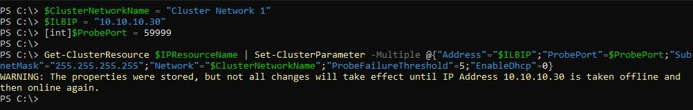
- 設定を反映させるために、次のコマンドで対象アプリケーションの役割 (グループ) を再起動します。
1 | Stop-ClusterGroup -Name "<ファイルサーバーの役割(グループ) 名>" |
以下、コマンド実行結果例です。
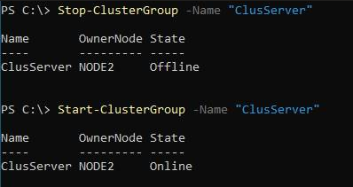
- 手順 3. と同様の以下のコマンドを実行して、ProbePort に指定したポート番号が設定されていることを確認します。
1 | Get-ClusterResource $IPResourceName | Get-ClusterParameter |
以下、コマンド実行結果例です。
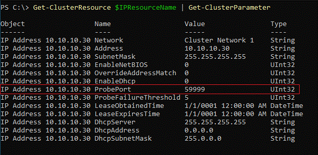
- Windows Defender ファイアウォールで、ロードバランサーからの Health プローブを受信できるように許可規則を作成します。
次のコマンドをクラスターを構成するすべてのノードで実行します。
1 | $ProbePort = <Probe ポート番号> |
以下、コマンド実行結果例です。
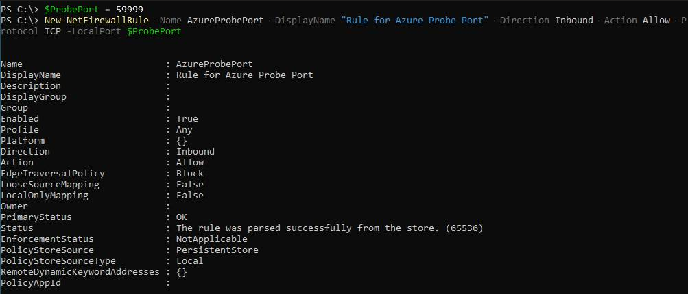
- ProbePort に指定したポート番号が動的ポートの範囲 (既定では 49152 ~ 65535) である場合には、他のプロセスに利用されないようにするために除外の設定をします。
次のコマンドをクラスターを構成するすべてのノードで実行します。
1 | netsh int ipv4 add excludedportrange protocol=tcp startport=<ポート番号> numberofports=<ポート数> |
以下、コマンド実行結果例です。
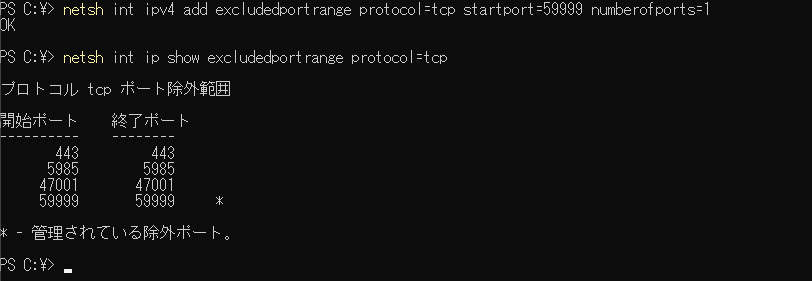
(3) Azure ロードバランサーの作成
アプリケーション (今回の例ではファイルサーバー) の仮想 IP アドレスと同じフロントエンド IP を持つ Azure ロードバランサーを作成します。
- Azure ポータルのロードバランサーのサービスメニューから、作成をクリックします。
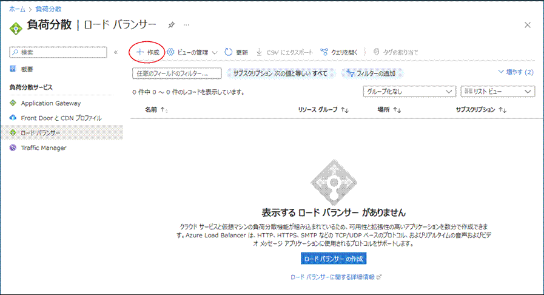
- 次のように入力して、最後に [次: フロントエンド IP 構成] をクリックします。
| 項目名 | 値 (備考) |
|---|---|
| サブスクリプション | 利用するサブスクリプション |
| リソースグループ | 任意 |
| 名前 | 任意 |
| 地域 | 任意 |
| SKU | Standard |
| 種類 | 内部 |
| レベル | 地域 |
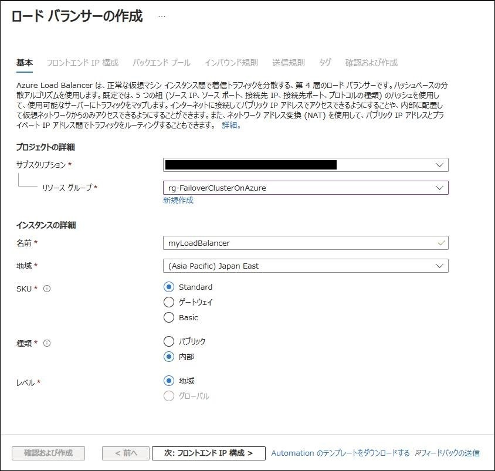
- 次の画面で [フロントエンド IP 構成の追加] をクリックします (①)。表示されたブレードから次のように入力して [追加] をクリックし (②)、最後に [次: バックエンド プール] をクリックします(③)。
| 項目名 | 値 (備考) |
|---|---|
| 名前 | 任意 |
| サブネット | ファイルサーバーの役割で利用するサブネット |
| 割り当て | 静的 |
| IP アドレス | 10.10.10.30 (ファイルサーバーの役割の仮想 IP アドレスを指定します) |
| 可用性ゾーン | 任意 |
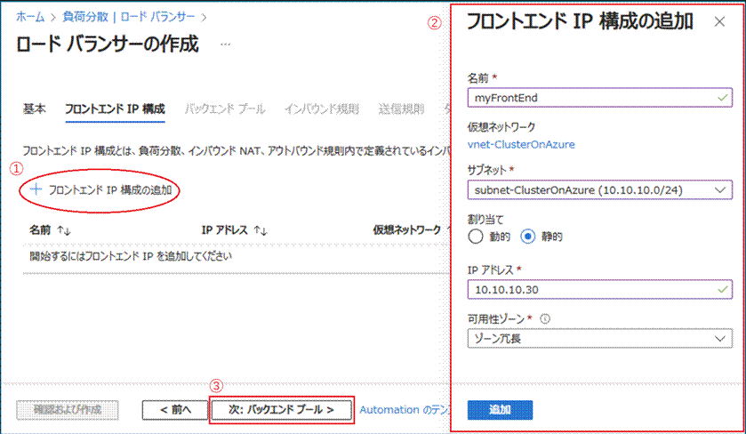
- 次の画面で [バックエンド プールの追加] をクリックします。
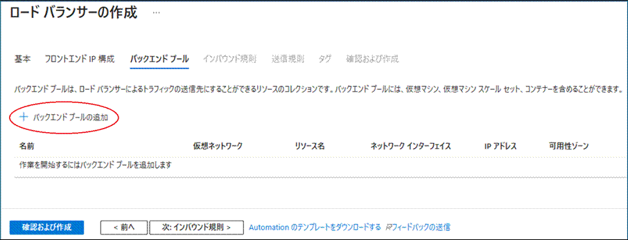
- 次のように入力し、IP 構成の [追加] をクリックします (③)。
| 項目名 | 値 (備考) |
|---|---|
| 名前 | 任意 (①) |
| バックエンドプールの構成 | NIC (②) |
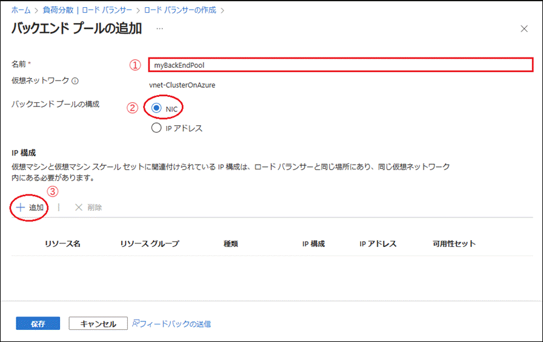
- 次のような [バックエンド プールへの IP 構成の追加] のメニューが表示されます。WSFC を構成するノードをすべて選択し (①)、最後に [追加] をクリックします (②)。
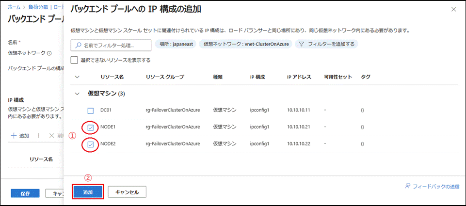
- 次のような画面になっていることを確認して [保存] をクリックします。
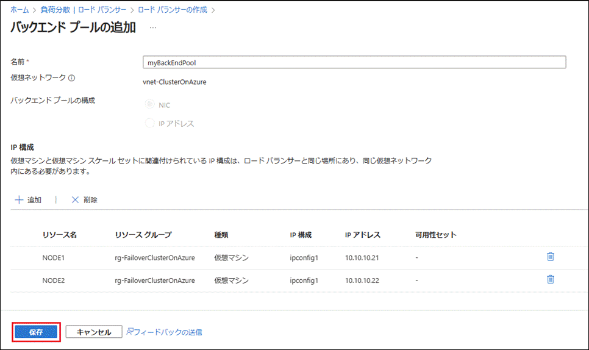
- 以下の画面で [次: インバウンド規則] をクリックします。
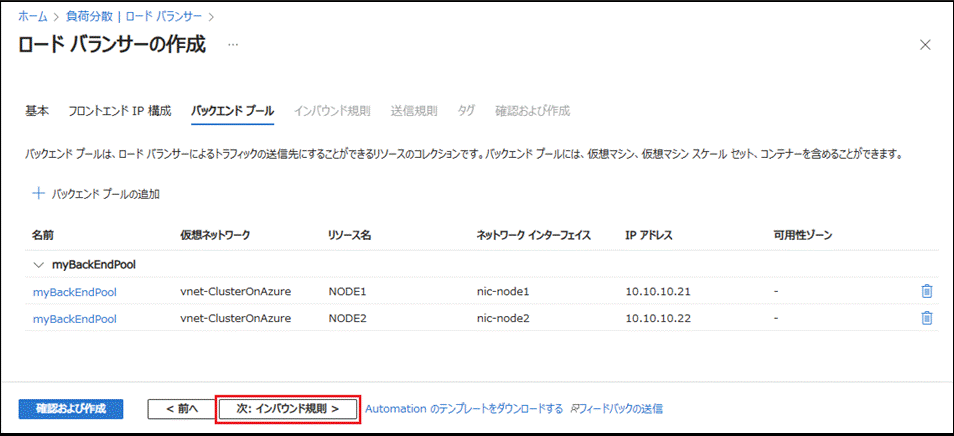
- [負荷分散規則の追加] をクリックします。
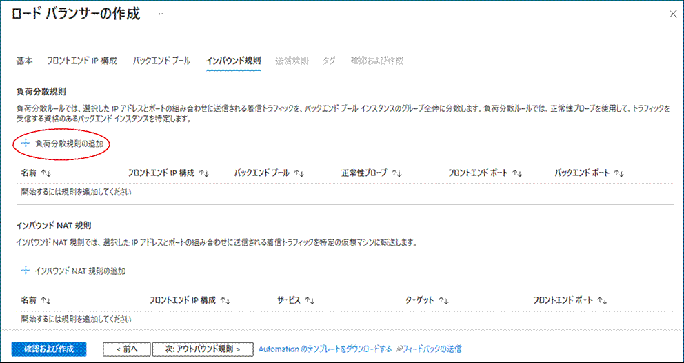
- 以下を入力して [保存] をクリックします。
| 項目名 | 値 (備考) |
|---|---|
| IP バージョン | IPv4 |
| フロントエンド IP アドレス | (本手順で作成したフロントエンド IP を選択します。) |
| バックエンドプール | (本手順で作成したバックエンドプールを選択します。) |
| プロトコル | TCP |
| ポート | 445 (フロントエンド IP で待ち受けするポートです。ファイルサーバーで使用するポート 445 を指定します。) |
| バックエンドポート | 445 (バックエンドにトラフィックを送信する際のポートです。ファイルサーバーで使用するポート 445 を指定します。) |
| 正常性プローブ | 新規作成 ※ |
| セッション永続化 | 任意 |
| アイドルタイムアウト（分） | 任意 |
| フローティング IP を有効にする | チェック |
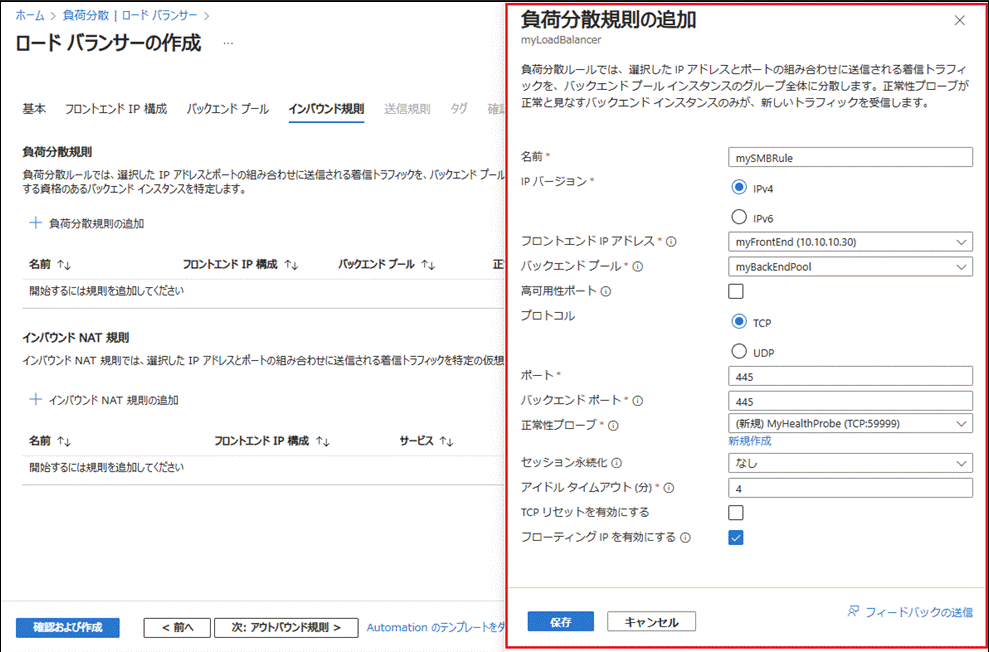
※ 正常性プローブの箇所で [新規作成] をクリックし、以下を入力して [保存] をクリックします。
| 項目名 | 値 (備考) |
|---|---|
| 名前 | 任意 |
| プロトコル | TCP |
| ポート | 59999 (“(2) Health プローブを待ち受けるポートの作成” で指定したポート) |
| 間隔 | 任意 |
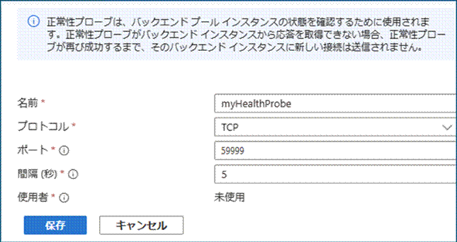
- [確認および作成] をクリックします。
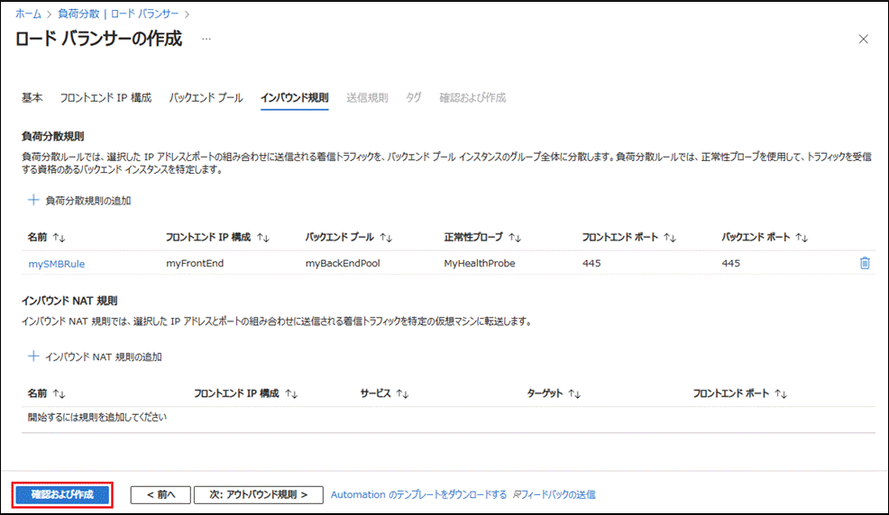
- 内容を確認して [作成] をクリックします。
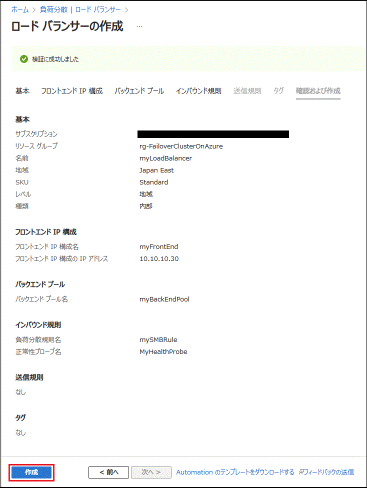
- 正常にロードバランサーが展開されたことを確認します。
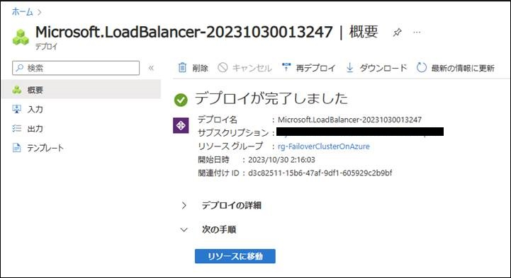
- ロードバランサーのリソースの監視セクションにある [メトリック] から、メトリックとして Health Probe Status を選択、Backend IP Address で分割し、ファイルサーバーの所有者ノードのみ Health プローブの応答が得られていることを確認します。フェールオーバークラスターマネージャー等からファイルサーバーの所有者を移動すると、Health プローブの応答がある VM が入れ替わります。
以下の図は、10.10.10.22 の IP アドレスを持つ VM がファイルサーバーの所有者となっている例です。
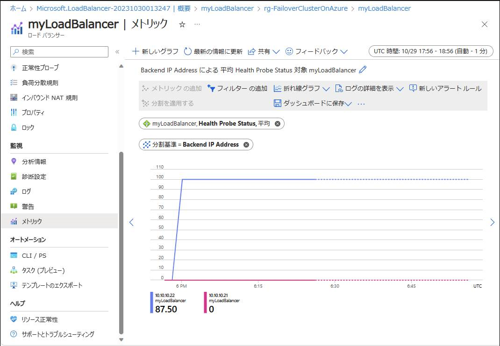
いかがでしたでしょうか。本投稿が少しでも皆様のお役に立てば幸いです。
※ 本情報の内容 (添付文書、リンク先などを含む) は、作成日時点でのものであり、予告なく変更される場合があります。